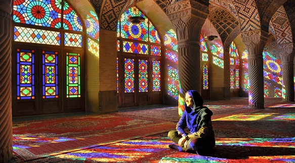
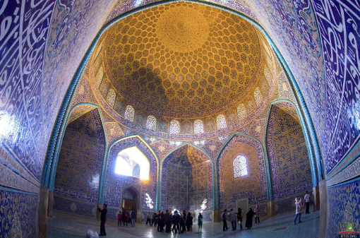
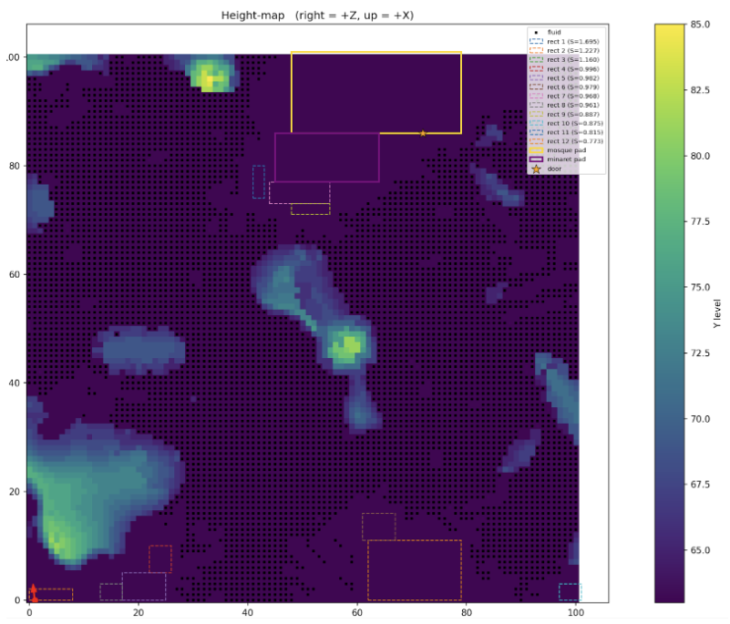
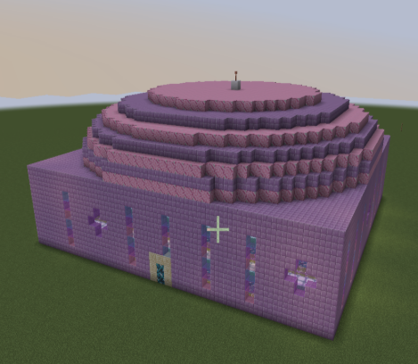
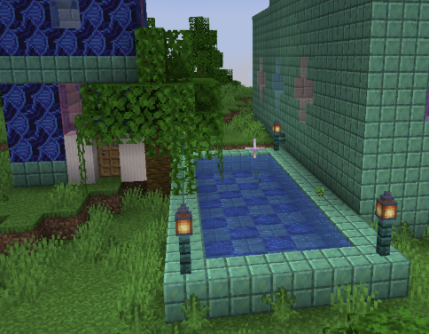
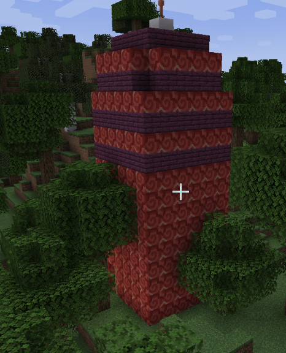
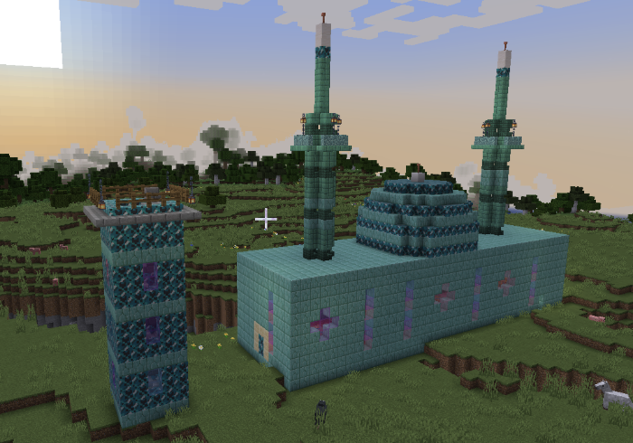
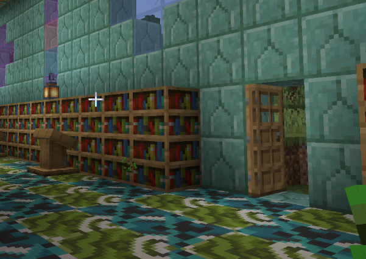

Prelude: Persian Mosque Architecture Lore
Inspired by Persian-style architecture—like the Pink Mosque in Shiraz—this project generates mosques in Minecraft. Core elements include a central ablution pool, a wide open prayer hall (typically unfurnished), intricate geometric patterns beneath domes, and minarets used historically for the call to prayer.
 References for visuals: Pink Mosque, Lonban Mosque, Sheikh Lotfollah Mosque.
1. Overview
The system analyzes terrain with a set of conditions and scores to choose the best layout. The main prayer hall is prioritized; minarets and a central pool are added when space allows. Style choices are randomized yet coherent via a unified theme, and sizes—and sometimes shapes—adapt to available space.
2. Implementation
2.1 Terrain scanning and layout
- Inputs: height-map + water mask. Find maximal rectangles that are flat, water-safe, non-overlapping, and above a minimum area.
- Water buffer: expand the water mask by
water_margin. - Smoothing: Gaussian blur (σ ≈ 1.2) to ignore tiny bumps.
- Flatness test: local max/min in a
7×7window; accept if(max−min) ≤ 1block. - Rectangle enumeration: histogram-stack method; keep aspect ratio ≥
min_aspect. - Defects & greedy selection: allow up to
fill_limit ≈ 20%bad-cells, sort by area, cap tomax_rects ≈ 30.
Scoring. Composite score promotes the hall site:
| Weight | Factor |
|---|---|
| 0.9 | Area |
| 0.8 | Proximity to other pads |
| 0.6 | Flatness |
| 0.3 | Squareness |
After picking the main building site, the system optionally adds a pool and/or an external minaret and places doors near flatter, drier areas close to other structures.
2.2 Building the Prayer Hall
Based on footprint and some randomness, the dome can be spherical or ellipsoidal (very elongated footprints avoid ellipsoids). Wall/dome heights scale with size; circular domes sometimes get rooftop minarets.
Each generation picks a fresh palette and block set so the result feels unique but cohesive. Stained-glass patterns echo the Pink Mosque. Floor motifs moved from CA/L-systems to simpler tilings (swirls, waves, stripes) that read better at Minecraft’s resolution.
  2.3 Minaret and Pool
When space allows, a small pool and an external minaret with stairs are added; colors/blocks follow the active theme.
 3. Conclusion & Future Work
Themes and block sets could be tuned by biome or nearby blocks. Terrain parameters could adapt to environment (e.g., relax flatness on mountains). ML/LLMs could help with theme selection and dynamic parameter tuning.
4. References
- Aggarwal, A. et al. Geometric Applications of a Matrix-Searching Algorithm. Algorithmica 2 (1987).
- Wolfram, S. A New Kind of Science. Wolfram Media, 2002.
- Ilachinski, A. Cellular Automata: A Discrete Universe. World Scientific, 2001.
- Prusinkiewicz, P., Lindenmayer, A. The Algorithmic Beauty of Plants. Springer, 1990.